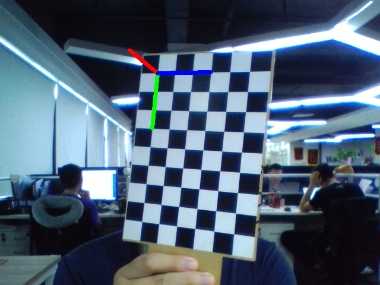
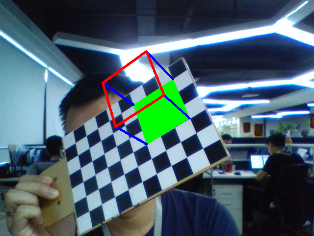

04-位置估计及3D重建¶
构建查找并构建三维坐标系
- 关键函数：
cv2.solvePnPRansac(
objpoints, # 对象点列表
corners, # 角点列表
cameraMatrix, # 相机矩阵
distCoeffs # 畸变系数
)
使用RANSAC方案从3D-2D点对应关系中查找对象姿态。
cv2.solvePnPRansac(objectPoints, imagePoints, cameraMatrix, distCoeffs[, rvec[, tvec[, useExtrinsicGuess[, iterationsCount[, reprojectionError[, minInliersCount[, inliers[, flags]]]]]]]]) → rvec, tvec, inliers
该函数在给定一组对象点、它们对应的图像投影以及相机矩阵和失真系数的情况下，估计对象姿势。
此函数找到一个使重新投影误差最小的姿势，即重新观察误差，即观察到的像素点投影imagePoints与物体投影（projectPoints（））objectPoints之间的平方距离之和。 RANSAC的使用可以避免异常值对结果的影响。
官方文档：
https://docs.opencv.org/3.0-beta/modules/calib3d/doc/camera_calibration_and_3d_reconstruction.html#solvepnpransac
https://docs.opencv.org/3.4/d9/d0c/group__calib3d.html#ga50620f0e26e02caa2e9adc07b5fbf24e
重建坐标系¶
- 需求及流程
根据物体坐标点和像素坐标点估算物体姿态，并建立坐标系
- 加载相机内参矩阵、畸变系数
- 加载图片
- 查找每个图片的角点
- 查找角点亚像素
- 计算对象姿态solvePnpRansac
- 投影3D点到图像平面
-
在图片上坐标系并显示图片
-
示例代码如下：
"""
根据物体坐标点和像素坐标点估算物体姿态，并建立坐标系
1. 加载相机内参矩阵、畸变系数
2. 加载图片
3. 查找每个图片的角点
4. 查找角点亚像素
5. 计算对象姿态solvePnpRansac
6. 投影3D点到图像平面
7. 在图片上坐标系并显示图片
"""
import numpy as np
import cv2
import glob
def draw(img, corners, imgpts):
corner = tuple(corners[0].ravel())
img = cv2.line(img, corner, tuple(imgpts[0].ravel()), (255,0,0), 5)
img = cv2.line(img, corner, tuple(imgpts[1].ravel()), (0,255,0), 5)
img = cv2.line(img, corner, tuple(imgpts[2].ravel()), (0,0,255), 5)
return img
if __name__ == '__main__':
fs = cv2.FileStorage("./calibration_in_params.yml", cv2.FILE_STORAGE_READ)
mtx = fs.getNode("cameraMatrix").mat()
dist = fs.getNode("distCoeffs").mat()
print(mtx)
print(dist)
fs.release()
objp = np.zeros((6 * 9, 3), np.float32)
objp[:, :2] = np.mgrid[0:6, 0:9].T.reshape(-1, 2)
criteria = (cv2.TERM_CRITERIA_EPS + cv2.TERM_CRITERIA_MAX_ITER, 30, 0.001)
"""
[[ 3. 0. 0.]
[ 0. 3. 0.]
[ 0. 0. -3.]]
"""
axis = np.float32([[3, 0, 0], [0, 3, 0], [0, 0, -3]]).reshape(-1, 3)
for fname in glob.glob('image_*.jpg'):
img = cv2.imread(fname)
gray = cv2.cvtColor(img, cv2.COLOR_BGR2GRAY)
ret, corners = cv2.findChessboardCorners(gray, (6, 9), None)
if ret:
corners2 = cv2.cornerSubPix(gray, corners, (11, 11), (-1, -1), criteria)
# 根据对象点和角点列表，查找旋转向量和平移向量
retval, rvecs, tvecs, inliers = cv2.solvePnPRansac(objp, corners2, mtx, dist)
# 将3D点投影到图像平面
# axis 为所需要的float类型的3D点列表
# 输出图像点和雅克比矩阵
imagePoints, jacobian = cv2.projectPoints(axis, rvecs, tvecs, mtx, dist)
img = draw(img, corners2, imagePoints)
cv2.imshow('img', img)
k = cv2.waitKey(0) & 0xff
if k == 's':
cv2.imwrite(fname[:6] + '.png', img)
cv2.destroyAllWindows()
- 效果如下：

重建立方体¶
- 示例代码：
import numpy as np
import cv2
import glob
def draw(img, corners, imgpts):
imgpts = np.int32(imgpts).reshape(-1,2)
# 将地板绘制成绿色，参数2为多个轮廓的列表，故需要多套一层[]
img = cv2.drawContours(img, [imgpts[:4]],-1,(0,255,0),-1)
print("-------------------")
# 柱子绘制成蓝色, 参数必须是tuple类型
for i,j in zip(range(4),range(4,8)):
print("{}.{} -> {}.{}".format(i, tuple(imgpts[i]), j,tuple(imgpts[j])))
img = cv2.line(img, tuple(imgpts[i]), tuple(imgpts[j]),(255,0,0),3)
# 顶部框用红色
img = cv2.drawContours(img, [imgpts[4:]],-1,(0,0,255),3)
return img
if __name__ == '__main__':
fs = cv2.FileStorage("./calibration_in_params.yml", cv2.FILE_STORAGE_READ)
mtx = fs.getNode("cameraMatrix").mat()
dist = fs.getNode("distCoeffs").mat()
print(mtx)
print(dist)
fs.release()
# 构建对象矩阵， Z=0
objp = np.zeros((6 * 9, 3), np.float32)
objp[:, :2] = np.mgrid[0:6, 0:9].T.reshape(-1, 2)
"""
[
[0,0],[1,0],[2,0] ...
[0,1],[1,1],[2,2] ...
...
]
"""
# 3D立方体的8个角点
# axis = np.float32([[3, 0, 0], [0, 3, 0], [0, 0, -3]]).reshape(-1, 3)
axis = np.float32([[0, 0, 0], [0, 3, 0], [3, 3, 0], [3, 0, 0],
[0, 0, -3], [0, 3, -3], [3, 3, -3], [3, 0, -3]])
criteria = (cv2.TERM_CRITERIA_EPS + cv2.TERM_CRITERIA_MAX_ITER, 30, 0.001)
index = 0
capture = cv2.VideoCapture(0)
while True:
_, frame = capture.read()
img = cv2.flip(frame, 1)
gray = cv2.cvtColor(img, cv2.COLOR_BGR2GRAY)
ret, corners = cv2.findChessboardCorners(gray, (6, 9), None)
if ret:
corners2 = cv2.cornerSubPix(gray, corners, (11, 11), (-1, -1), criteria)
# 查找旋转向量和平移向量
retval, rvecs, tvecs, inliers = cv2.solvePnPRansac(objp, corners2, mtx, dist)
# 将3D点投影到图像平面
imgpts, jac = cv2.projectPoints(axis, rvecs, tvecs, mtx, dist)
img = draw(img, corners2, imgpts)
cv2.imshow('img', img)
k = cv2.waitKey(100) & 0xff
if k == ord('s'):
cv2.imwrite('image_pose_{}.png'.format(index), img)
index += 1
elif k == 27 or k == ord('q') or k == ord('Q'):
break
cv2.destroyAllWindows()
- 效果如下：
